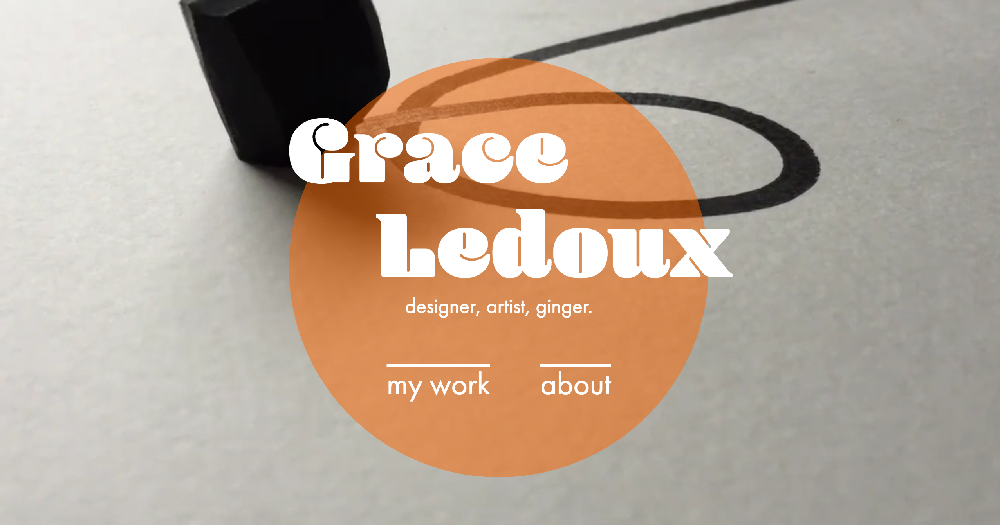

MAY 1, 2018
Maybe this is premature, given how I'm not 100% done working out the kinks in my new site, but one of the key indicators of success in this project is how it measures up to my old website. After all, the whole point of this from the beginning was to improve on a site I already had created, so I feel it's important to look at the two side by side and assess what's new and what's effective. I'm going to focus on the homepage and gallery pages, as those are what needed the most work and best show the goals of the site.
First of all, the homepages. These are definitely similar in a lot of ways, but the number one thing I wanted to improve from the first one is your path of nagivation to the other pages in the site. In the first site, there's just one link for "my work", and I imagine if you were an employer looking for my portfolio, you'd wonder why you had to come to this screen at all if there's a whole other section for My Work a click away. On the first site, there really wasn't a reason for this home page to exist; if the site only had three pages and it was a portfolio site, it would've made more sense to land directly on my portfolio.
In contrast, the updated site uses a more conventional top menu to clearly show where you are on the site and where you could be. Splitting my portfolio into Art and Design not only makes it seem like I have more work (it can't all be contained on one page! Wow!), but achieves that organization aspect I wanted at the get-go. I've always gotten a lot of positive feedback on the video background, so that stayed, with my name and tagline slightly smaller and less loud.
The portfolio page was where the most work needed to be done, and I'm honestly really pleased to see these back to back. On my first site, you'd land on a page that didn't offer any new information, told you how to interact with it, and even had to have an arrow to indicate that you should scroll down to see the content you're there for; why did this page exist? Why not just show the work as soon as you get to the portfolio page?
In contrast, the new portfolio pages show big images right away, have better hover interactions offering a snippet of info, and separate the large chunks of small text to other pages so they aren't breaking up the images. Adding drop shadows solved the issue in my first site of images blending into the white background.
It's really satisfying to look at these sites back to back, because I think the new one definitely still has a similar vibe to the original, but executes my goals in a cleaner, more efficient way.